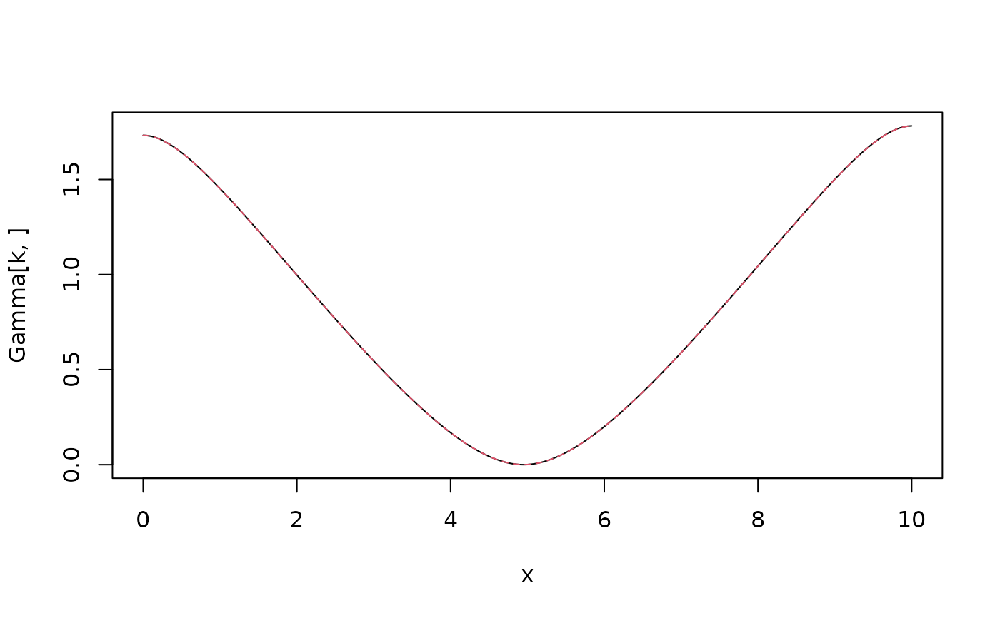

Variogram \(\gamma(s_0,s)\) of intrinsic SPDE model $$(-\Delta)^{\beta/2}(\kappa^2-\Delta)^{\alpha/2} (\tau u) = \mathcal{W}$$ with Neumann boundary conditions and a mean-zero constraint on a square \([0,L]^d\) for \(d=1\) or \(d=2\).
Usage
variogram.intrinsic.spde(
s0 = NULL,
s = NULL,
kappa = NULL,
alpha = NULL,
beta = NULL,
tau = 1,
L = NULL,
N = 100,
d = NULL
)Arguments
- s0
The location where the variogram should be evaluated, either a double for 1d or a vector for 2d
- s
A vector (in 1d) or matrix (in 2d) with all locations where the variogram is computed
- kappa
Range parameter.
- alpha
Smoothness parameter.
- beta
Smoothness parameter.
- tau
Precision parameter.
- L
The side length of the square domain.
- N
The number of terms in the Karhunen-Loeve expansion.
- d
The dimension (1 or 2).
Examples
if (requireNamespace("RSpectra", quietly = TRUE)) {
x <- seq(from = 0, to = 10, length.out = 201)
beta <- 1
alpha <- 1
kappa <- 1
op <- intrinsic.matern.operators(
kappa = kappa, tau = 1, alpha = alpha,
beta = beta, loc_mesh = x, d = 1
)
# Compute and plot the variogram of the model
Sigma <- op$A[,-1] %*% solve(op$Q[-1,-1], t(op$A[,-1]))
One <- rep(1, times = ncol(Sigma))
D <- diag(Sigma)
Gamma <- 0.5 * (One %*% t(D) + D %*% t(One) - 2 * Sigma)
k <- 100
plot(x, Gamma[k, ], type = "l")
lines(x,
variogram.intrinsic.spde(x[k], x, kappa, alpha, beta, L = 10, d = 1),
col = 2, lty = 2
)
}
